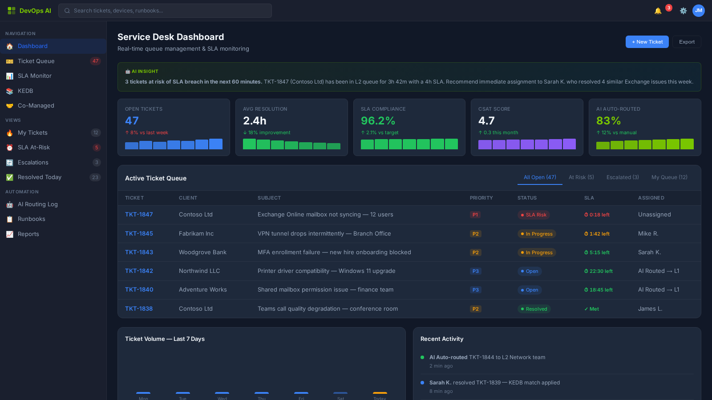
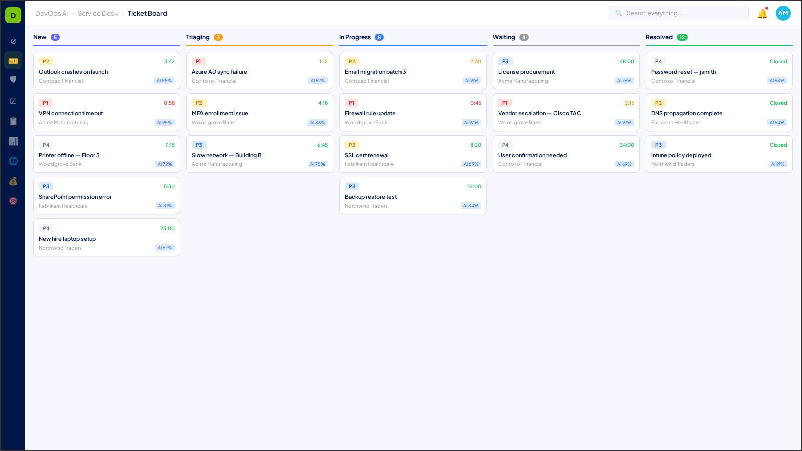

Service Desk
AI-augmented ticket management, SLA optimization, and predictive support operations
The Service Desk is the operational heartbeat of every MSP. DevOps AI transforms reactive ticket queues into predictive, AI-augmented support operations — routing tickets intelligently, surfacing known-error solutions before technicians search, and predicting SLA breaches before they happen.
Process Areas 8
Automated classification, priority scoring, and intelligent routing based on technician skills, workload, and client SLA tiers.
AI-maintained knowledge base that surfaces matching solutions as tickets are created. Self-healing when new resolutions are confirmed.
Real-time SLA tracking with predictive breach alerts. Automated escalation triggers when resolution targets are at risk.
AI-optimized technician assignment considering skills matrix, current workload, client proximity, and specialization.

